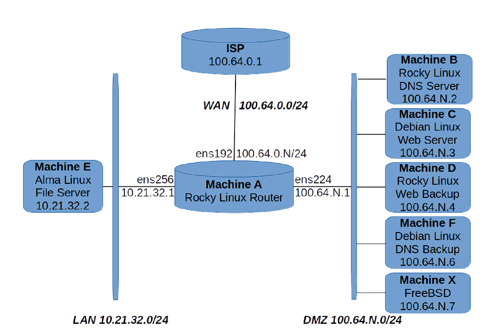

Collection of system-focused projects involving users, services, automation, and performance tuning.
Project Overview
This section showcases a series of Linux system administration projects carried out for a fictional enterprise, Dunder-Mifflin. The goal was to build a robust, automated, and secure server infrastructure across multiple operating systems and network segments.
Network Topology
The network design includes a Rocky Linux router, DNS and web servers across both Rocky and Debian distributions, a file server using AlmaLinux, and a FreeBSD host. Machines are divided between a LAN (10.21.32.0/24) and a DMZ (100.64.N.0/24) segment.
Features
-
User Management Automation: This was the first step of the project. A script was developed to automate the creation and management of user accounts across Linux (Machines A-F) and FreeBSD (Machine X). It handles:
- Username generation based on employee names (first initial + last name)
- Uniform password setup across all machines
- Creation of home directories with proper permissions and ownership
- Assignment to secondary groups like managers, sales, and accounting
- Setup of shared group directories with group ID inheritance
- Integration of existing user data on Machine E
- Granting sudo access to administrators
- System-wide umask configuration for secure default permissions
- Networking & Host Configuration: Static IP assignments, functional hostnames, and subnet-based segmentation.
- DNS Server Setup: BIND-based DNS for forward/reverse lookups, recursive resolution, and zone syncing.
- Apache Web Hosting: Virtual hosts, mirrored web services, and automated backup web servers.
- User & File Management: NFS file sharing and centralized user provisioning using Ansible roles.
- Security & Access Control: PAM policies for password rules and time-based access restrictions.
- Backup & Redundancy: RAID configurations, NFS automation, and rsync for reliable data protection.
- System Automation: Ansible for server hardening, consistency enforcement, and system updates.
- Time Sync: NTP/Chrony setup with stratum-based hierarchy across Linux and FreeBSD machines.